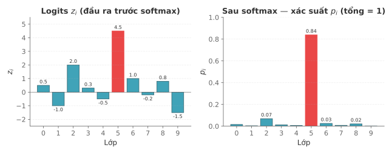

Học máy
Bài 11: Mạng nơ-ron nhân tạo
Trường ĐH Công nghệ – Đại học Quốc gia Hà Nội
Nội dung
- Lịch sử mạng nơ-ron
- Mạng nơ-ron là gì?
- Hàm mất mát (loss function)
- Xuống đồi gradient & lan truyền ngược (backpropagation)
- Các kiến trúc hiện đại
1.
Lịch sử
mạng nơ-ron
Bốn cột mốc lớn
1958 — Perceptron
Rosenblatt: mô hình mạng học đầu tiên. Đặt nền móng.
1986 — Lan truyền ngược
Rumelhart, Hinton & Williams: thuật toán huấn luyện mạng nhiều lớp. Mở khả năng học.
2012 — AlexNet
Krizhevsky thắng ImageNet với CNN sâu. Bùng nổ học sâu.
2017 — Transformer
Vaswani et al.: "Attention is All You Need". Nền tảng của GPT, BERT, Gemini.
Từ ý tưởng đơn giản → mô hình tỉ tham số trong vòng 60 năm.
Dòng thời gian đầy đủ
- 1943 — McCulloch & Pitts: mô hình neuron nhân tạo đầu tiên.
- 1958 — Rosenblatt: Perceptron.
- 1982 — Hopfield: mạng bộ nhớ liên kết (lý thuyết hàm năng lượng).
- 1986 — Hinton phổ biến lan truyền ngược.
- 1998 — LeCun: LeNet — CNN đầu tiên nhận dạng chữ số.
- 2012 — AlexNet: bùng nổ học sâu.
- 2017 — Transformer: "Attention is All You Need".
- 2024 — Nobel Vật lý trao cho Hopfield & Hinton.
Nobel Vật lý 2024 — Hopfield & Hinton

Trao cho "những đóng góp nền tảng cho mạng nơ-ron nhân tạo và học máy".
2.
Mạng Nơ-ron
là gì?
Ví dụ: MNIST

Bài toán: Cho ảnh 28×28 pixel (784 điểm ảnh) → phân loại chữ số 0–9
Kiến trúc mạng MNIST

784 → 16 → 16 → 10 neurons — mỗi kết nối là một trọng số cần học
Cấu trúc mạng — các lớp
- Lớp đầu vào (input layer): 784 neuron (1 neuron = 1 pixel).
- Lớp ẩn 1 (hidden layer): 16 neuron.
- Lớp ẩn 2: 16 neuron.
- Lớp đầu ra (output layer): 10 neuron (1 neuron = 1 chữ số 0–9).
Neuron — đơn vị cơ bản
- Nhận nhiều giá trị đầu vào \(x_1, x_2, \ldots\)
- Mỗi đầu vào có trọng số \(w_j\)
- Cộng thêm bias \(b\)
- Áp dụng hàm kích hoạt
- Xuất ra một giá trị trong \([0, 1]\)
Công thức:
\[ z = w_1 x_1 + w_2 x_2 + \ldots + b \]
\[ a = \sigma(z) = \dfrac{1}{1 + e^{-z}} \]
ReLU: \(a = \max(0, z)\) — phổ biến hơn hiện nay.
Hàm kích hoạt (activation function)
Đưa tính phi tuyến vào mạng — nếu không có, nhiều lớp = 1 lớp tuyến tính.
- Sigmoid: \( \sigma(z) = \dfrac{1}{1+e^{-z}} \) — đầu ra \(\in(0,1)\), dùng cho xác suất nhị phân.
- Tanh: đầu ra \(\in(-1,1)\) — hay dùng trong RNN/LSTM.
- ReLU: \( \max(0,z) \) — mặc định cho mạng sâu, nhưng có hiện tượng neuron chết.
- GELU: \( x \cdot \sigma(1.702x) \) — mặc định trong Transformer.
- Softmax (cho đầu ra đa lớp): \(\mathrm{softmax}(z)_i = \dfrac{e^{z_i}}{\sum_{j=1}^K e^{z_j}}\) — biến vector logits thành phân phối xác suất, \(\sum_i p_i = 1\).
Sigmoid vs ReLU

Sigmoid bão hòa ở 2 đầu — ReLU tuyến tính ở vùng dương, triệt tiêu hẳn ở vùng âm
GELU vs ReLU

GELU cho phép giá trị âm nhỏ lọt qua ở vùng x ≈ −0.5 — không có dead neuron, gradient luôn tồn tại
Softmax — đầu ra đa lớp
Biến vector logits \(z\) (giá trị tự do) thành phân phối xác suất:
\[ p_i = \mathrm{softmax}(z)_i = \dfrac{e^{z_i}}{\sum_{j=1}^{K} e^{z_j}}, \qquad \sum_i p_i = 1 \]
Logit lớn nhất (đỏ) trở thành xác suất lớn nhất — softmax "khuếch đại" sự chênh lệch.
Trọng số \(w\) và Bias \(b\)
- Trọng số \(w_j\): điều chỉnh tầm quan trọng của từng kết nối.
- Bias \(b\): dịch chuyển ngưỡng kích hoạt.
→ Cần một thước đo sai số, và một thuật toán tối ưu hoá!
3.
Hàm mất mát
(loss function)
Đo mức độ sai — để biết phải sửa theo hướng nào.
MSE — sai số bình phương trung bình
Dùng cho bài toán hồi quy — đầu ra là giá trị liên tục.
\[ \mathcal{L}_{\text{MSE}} = \frac{1}{n} \sum_{i=1}^{n} (y_i - \hat{y}_i)^2 \]- Phạt nặng lỗi lớn (do bình phương).
- Nhạy với điểm ngoại lai (outlier).
- Gradient: \( \dfrac{\partial \mathcal{L}}{\partial \hat{y}_i} = -\dfrac{2}{n}(y_i - \hat{y}_i) \).
Lưu ý: Có thể bỏ chia \(n\) (tổng bình phương sai số) — cùng hướng gradient, khác hằng số tỉ lệ.
Cross-Entropy nhị phân (BCE)
Dùng cho bài toán phân loại nhị phân — một trong 2 lớp.
\[ \mathcal{L}_{\text{BCE}} = -\frac{1}{n}\sum_{i=1}^{n} \Big[ y_i \log\hat{p}_i + (1 - y_i)\log(1 - \hat{p}_i) \Big] \]- Lớp đầu ra dùng Sigmoid → \(\hat{p} \in (0,1)\).
- Gradient gọn đẹp: \(\partial \mathcal{L}/\partial z = \hat{y} - y\).
- Sigmoid + BCE triệt tiêu nhau khi tính đạo hàm → tránh được triệt tiêu gradient.
Chẩn đoán bệnh: có / không.
Sigmoid + BCE luôn đi cùng nhau.
Cross-Entropy đa lớp (CCE)
Dùng cho bài toán phân loại đa lớp — một trong \(K\) lớp.
\[ \mathcal{L}_{\text{CCE}} = -\sum_{k=1}^{K} p_k^* \log(p_k) = -\log\, p(y = k^* \mid x) \]- Lớp đầu ra dùng Softmax.
- Nhãn thật là vector one-hot \(p^* = (0,\ldots,1,\ldots,0)\).
- Chỉ lớp đúng đóng góp vào mất mát.
- Phạt rất nặng khi tự tin sai.
\(-\log(0.99) \approx 0.01\) ✅ tự tin đúng.
\(-\log(0.01) \approx 4.6\) ❌ tự tin sai.
Hàm mất mát — khi nào dùng gì?
| Hàm mất mát | Bài toán | Lớp đầu ra | Ví dụ |
|---|---|---|---|
| MSE | Hồi quy | Tuyến tính | Dự đoán giá nhà, nhiệt độ |
| MAE | Hồi quy (có ngoại lai) | Tuyến tính | Dự đoán doanh thu |
| Binary CE | Phân loại nhị phân | Sigmoid | Spam, chẩn đoán bệnh |
| Categorical CE | Phân loại đa lớp | Softmax | MNIST, ImageNet, NLP |
Softmax + CCE | Sigmoid + BCE | Linear + MSE/MAE.
4.
Xuống đồi gradient
& lan truyền ngược
Phần A — Xuống đồi gradient: ý tưởng,
gradient nói gì, tốc độ học.
Phần B — Lan truyền ngược: quy tắc chuỗi + thuật toán.
Phần C — Vấn đề thực tế khi huấn luyện.
Ý tưởng xuống đồi gradient
Quy tắc cập nhật:
\[ w \leftarrow w - \eta \, \dfrac{\partial \mathcal{L}}{\partial w} \]- Gradient \(\nabla_w \mathcal{L}\): hướng tăng nhanh nhất của mất mát → đi ngược chiều để giảm nhanh nhất.
- \(\eta\) = tốc độ học (learning rate) — bước đi dài hay ngắn.
Gradient cho biết hai điều
1. Hướng — nên tăng hay giảm \(w\)?
- \(\partial \mathcal{L} / \partial w\) âm → mất mát giảm khi \(w\) tăng → tăng \(w\).
- \(\partial \mathcal{L} / \partial w\) dương → mất mát tăng khi \(w\) tăng → giảm \(w\).
→ \(w_{\text{mới}} = 0 - 0.01 \cdot (-22) = +0.22\) ✅
\(\partial \mathcal{L} / \partial w = +15\) (dương)
→ \(w_{\text{mới}} = w - 0.01 \cdot 15\) → giảm xuống ✅
2. Độ lớn — còn xa cực tiểu không?
- \(|\nabla \mathcal{L}|\) lớn → đang ở sườn dốc, còn xa cực tiểu.
- \(|\nabla \mathcal{L}|\) nhỏ → gần phẳng, gần cực tiểu.
- \(\nabla \mathcal{L} \approx 0\) → đã đến đáy, dừng.
Bước 2: \(\nabla \mathcal{L} = -20.68\) → bớt dốc
Bước 3: \(\nabla \mathcal{L} = -19.44\) → tiếp tục giảm
\(\vdots\)
Bước \(n\): \(\nabla \mathcal{L} \approx 0\) → dừng ✅
Tốc độ học (\(\eta\)) & bộ tối ưu
Quy tắc cập nhật: \( w \leftarrow w - \eta \, \dfrac{\partial \mathcal{L}}{\partial w}\). Chọn \(\eta\) thế nào?
- 🐌 \(\eta\) quá nhỏ: học rất chậm, dễ bị kẹt.
- 🐇 \(\eta\) quá lớn: dao động, không hội tụ.
- ✅ \(\eta\) vừa: hội tụ nhanh và ổn định.
Quy tắc chuỗi — chìa khoá tính gradient
Trọng số \(w\) không tác động trực tiếp đến mất mát — phải đi qua chuỗi:
\[ w \;\longrightarrow\; z \;\longrightarrow\; a \;\longrightarrow\; \mathcal{L} \]Cú hích nhỏ — hích \(w\) một chút \(\delta w\):
\[ \begin{aligned} \delta z &= x \cdot \delta w \\ \delta a &= \sigma'(z) \cdot \delta z \\ \delta \mathcal{L} &= \tfrac{\partial \mathcal{L}}{\partial a} \cdot \delta a \end{aligned} \]Chia chuỗi cho \(\delta w\) → quy tắc chuỗi:
\[ \frac{\partial \mathcal{L}}{\partial w} = \frac{\partial \mathcal{L}}{\partial a} \cdot \frac{\partial a}{\partial z} \cdot \frac{\partial z}{\partial w} \]Lan truyền ngược — forward + backward
Mạng MNIST ~13 000 tham số → cần 13 000 đạo hàm riêng. Backprop tính tất cả trong một lần duyệt:

- Lan truyền tiến: đi từ đầu vào → đầu ra, tính \(\hat{y}\) và mất mát \(\mathcal{L}\); lưu giá trị trung gian \(z^{(\ell)}, a^{(\ell)}\).
- Lan truyền ngược: áp dụng quy tắc chuỗi từ \(\mathcal{L}\) ngược về — mỗi lớp chờ lớp sau tính xong mới tính được.
- Cập nhật: \(w \leftarrow w - \eta \, \partial \mathcal{L} / \partial w\) cho từng \(w\).
Neuron chết & triệt tiêu gradient
Neuron chết (dead neuron — với ReLU)
- ReLU: \(\max(0, z)\) → đạo hàm = 0 khi \(z \le 0\).
- Gradient = 0 → trọng số không bao giờ được cập nhật.
- Neuron "chết" mãi mãi.
- Giải pháp: Leaky ReLU, GELU.
Triệt tiêu gradient (vanishing gradient — với sigmoid)
- Đạo hàm sigmoid tối đa = 0.25.
- Nhân qua nhiều lớp → gradient tiệm cận 0.
- Lớp đầu không học được.
- Giải pháp: ReLU, Batch Norm, ResNet.
Cực tiểu địa phương & điểm yên ngựa
Cực tiểu địa phương (local minimum)
- Gradient = 0 nhưng chưa phải đáy thật.
- Trong không gian 13 000 chiều, cực tiểu địa phương rất hiếm.
- Cực tiểu địa phương tìm được thường gần bằng cực tiểu toàn cục.
Điểm yên ngựa (saddle point)
- Gradient = 0, nhưng một số chiều dốc lên, chiều khác dốc xuống.
- Phổ biến hơn cực tiểu địa phương trong mạng sâu.
- Xuống đồi gradient dễ bị kẹt ở đây hơn.
Minh hoạ điểm yên ngựa

Tại điểm yên ngựa, gradient = 0 nhưng một trục cong xuống, trục khác cong lên — không phải cực tiểu.
Batch / SGD / Mini-batch SGD
- Toàn lô (batch GD): dùng toàn bộ dữ liệu mỗi bước → chính xác nhưng rất chậm.
- Ngẫu nhiên (SGD): dùng 1 mẫu mỗi bước → nhanh nhưng dao động nhiều.
- Mini-batch SGD: dùng 32–256 mẫu → cân bằng tốt nhất ✅ — mặc định trong mọi framework hiện đại.
Nhiễu mini-batch giúp thoát cực tiểu địa phương & yên ngựa tốt hơn toàn lô.
5.
Các kiến trúc
hiện đại
RNN · LSTM · CNN · Transformer
RNN — mạng nơ-ron hồi quy
Ứng dụng: dịch máy, phân tích cảm xúc, dự báo chuỗi thời gian.

Cùng cell $A$ áp dụng lặp qua các bước thời gian — hidden state $h_t$ truyền thông tin từ quá khứ.
RNN — đặc điểm chính
✅ Ưu điểm
- Xử lý chuỗi dữ liệu (văn bản, âm thanh).
- Chia sẻ trọng số theo thời gian.
- Có "bộ nhớ" về các bước trước.
❌ Nhược điểm
- Triệt tiêu gradient — gradient nhân qua nhiều bước co lại gần 0 → quên dữ liệu xa.
- Không song song hoá được — chậm.
📖 Chi tiết về vanishing / exploding gradient và các giải pháp (LSTM, GRU, gradient clipping) — học sâu hơn ở môn Deep Learning.
LSTM — bộ nhớ dài-ngắn hạn
Ứng dụng: mô hình ngôn ngữ, nhận dạng giọng nói, dịch máy.

Ba cổng (quên / nhập / xuất) học cách giữ-bỏ thông tin trên "băng chuyền" cell state $c_t$ — giải quyết triệt tiêu gradient của RNN.
CNN — mạng tích chập
Ứng dụng: nhận dạng ảnh, phát hiện vật thể, phân tích ảnh y tế.

Khối "học đặc trưng" (tích chập + gộp) → khối "phân loại" (FC + softmax). Bộ lọc trượt qua ảnh, chia sẻ trọng số → ít tham số.
Transformer — tự chú ý
"Attention is All You Need" (2017) — Google Brain. Nền tảng của GPT, BERT, Gemini, Claude, LLaMA…
Mỗi từ "nhìn" mọi từ khác qua trọng số chú ý — song song hoá hoàn toàn, bắt được phụ thuộc rất xa.
So sánh tổng hợp
| Kiến trúc | Dữ liệu tốt nhất | Ưu điểm chính | Nhược điểm chính | Ví dụ |
|---|---|---|---|---|
| RNN | Chuỗi ngắn | Xử lý tuần tự | Triệt tiêu gradient | Phân tích cảm xúc |
| LSTM | Chuỗi dài | Bộ nhớ dài hạn | Phức tạp, chậm | Dịch máy, nhận dạng giọng nói |
| CNN | Hình ảnh, âm thanh | Nhận dạng pattern | Kém với quan hệ xa | ImageNet, YOLO |
| Transformer | Văn bản, đa phương thức | Song song, tự chú ý | Chi phí khổng lồ | GPT, BERT, Gemini |
Tóm tắt
- Mạng nơ-ron học bằng cách điều chỉnh hơn 13 000 trọng số qua dữ liệu.
- Hàm mất mát đo sai số — chọn đúng hàm cho đúng bài toán.
- Xuống đồi gradient + lan truyền ngược = "động cơ" tối ưu hoá toàn bộ tham số.
- SGD, neuron chết, triệt tiêu gradient — những vấn đề thực tế cần giải quyết.
- Transformer là kiến trúc chủ đạo nhờ song song hoá và cơ chế tự chú ý.
Tài liệu tham khảo
- 3Blue1Brown. (2017). Neural Networks [Video series]. YouTube. youtube.com/3b1b-neural-networks
- Starmer, J. (2019). Neural Networks [Video series]. StatQuest. youtube.com/@statquest
- Goodfellow, I., Bengio, Y., & Courville, A. (2016). Deep Learning. MIT Press. deeplearningbook.org
- Zhang, A. et al. (2023). Dive into Deep Learning. d2l.ai
- Ng, A. (2017). Deep Learning Specialization. Coursera / DeepLearning.AI. deeplearning.ai
- Vaswani, A. et al. (2017). Attention is all you need. NeurIPS 2017.
- LeCun, Y., Bengio, Y., & Hinton, G. (2015). Deep learning. Nature, 521, 436–444.